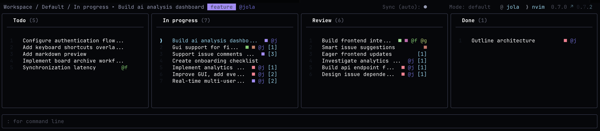

hjkl
Keyboard centric
Navigate boards, issues, swimlanes, and contexts with vim-like movement. Or cheat with arrow keys. Or launch the browser app.
epiq is an open source, distributed, terminal-native issue tracker backed by Git. Local-first, keyboard-driven, event-sourced, and MCP-ready. Manage projects from the commandline, browser, or editor.

Developers are most productive in their editors. epiq allows devs to stay close to the tools they already use.
epiq started in the terminal, but also features a powerful browser interface, catering to the needs of all stakeholders.
epiq optimizes for flow: keyboard navigation, command history, filters, autocompletion, and plain Git synchronization.
Navigate boards, issues, swimlanes, and contexts with vim-like movement. Or cheat with arrow keys. Or launch the browser app.
epiq uses Git under the hood, with isolated worktrees and state branches, so teams can collaborate without introducing another central service.
Changes are appended as events, replayed deterministically, and designed to converge. Inspect what happened yesterday, last week, or one year ago.
Epiq takes its own path. Instead of a centralized, managed service, project state lives alongside your repository and travels with it.
Code, plan, review, retrospect issues without context-switching. epiq keeps local interaction instant while allowing you to sync explicitly or automatically.
# launch inside any Git repo
epiq
# launch as browser GUI
epiq gui
# create work from the terminal
:new issue Add keyboard shortcuts
# narrow the board
:filter tag prio
# synchronize state
:syncEach release ships a single, self-contained executable. Links always resolve to the latest release.
Apple Silicon (arm64).
:download macos-arm64x86-64 (x64).
:download linux-x64x86-64 (x64).
:download windows-x64Looking for older versions or checksums? See all releases on GitHub.
"Issue tracking should be smooth."
- probably someoneInstall globally, enter any Git repository, and run epiq. First launch opens an interactive setup wizard. From there, use the terminal board or launch the browser GUI.
npm install --global epiq
cd your-existing-repo-with-remote-tracking
epiq